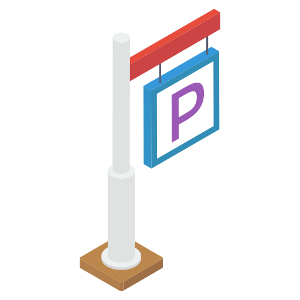

Overview
Parkking a driving and parking assist device and it combines mobile app and windshield display. It’s a revolution of the car navigation system with a parking reservation. It helps drivers to focus on driving without being distracted by switching between mobile app and driving. This project includes a thorough process from research to design.
My Role
UX/Product Designer
Duration
10 Weeks
Platform
Windshield & Moblie
Problem Space
Distracted driving is dangerous, and cell phone use while driving is a major factor. Although most drivers use navigation apps on their phones, it could be dangerous because drivers get distracted by their phone call, messages, and other notifications. According to The National Highway Traffic Safety Administration, driver distraction is the cause of 25-30% of all roadway accidents in the U.S every year.
Navigation apps are not clear enough for drivers. For example, the arrows on the map are unintuitive when it comes to complicated intersections or frontage roads and the voice direction does not adjust with realtime traffic. Drivers are easily to get confused and distracted due to the disadvantages of navigation apps.

Parking is a horrible nightmare. During rush hours or weekends, it's almost impossible to find a parking lot in downtown or shopping mall. According to USA Today, people in the U.S spend an average of 17 hours a year on finding a parking space. In the hard-hit U.S. urban area like NYC, drivers on average spend 107 hours a year looking for parking spots.